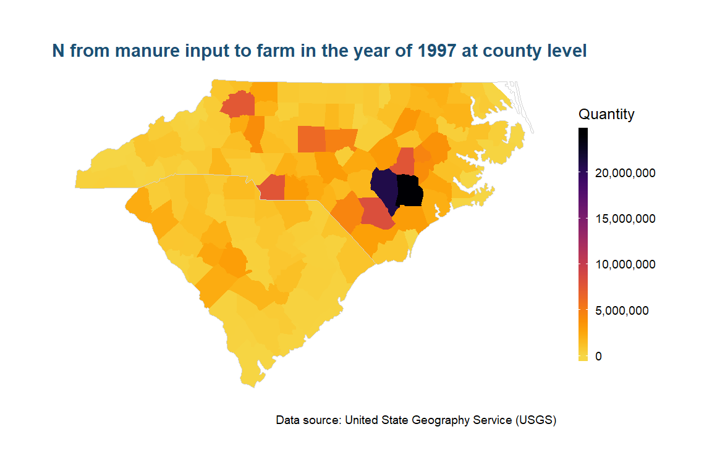
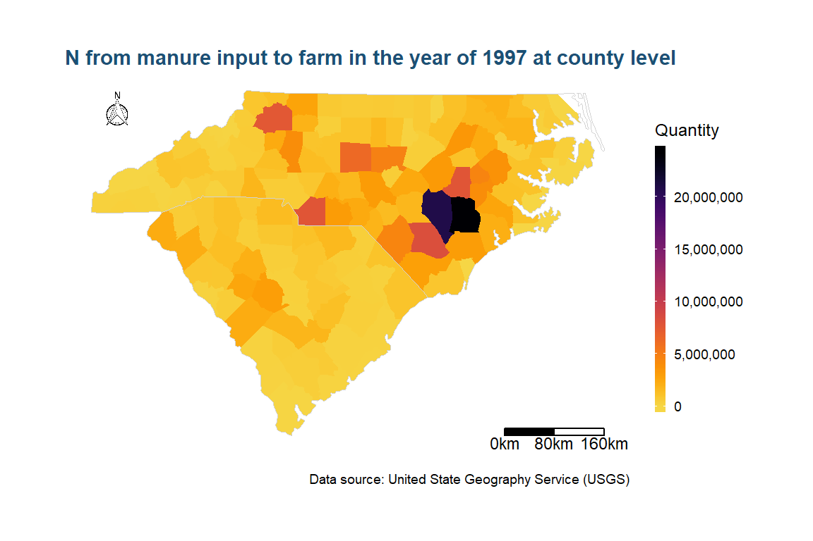
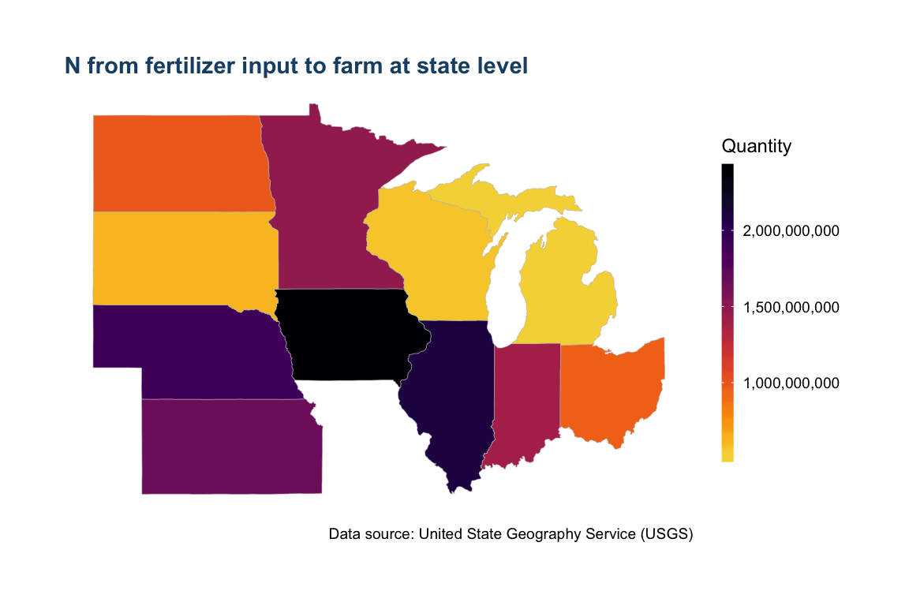
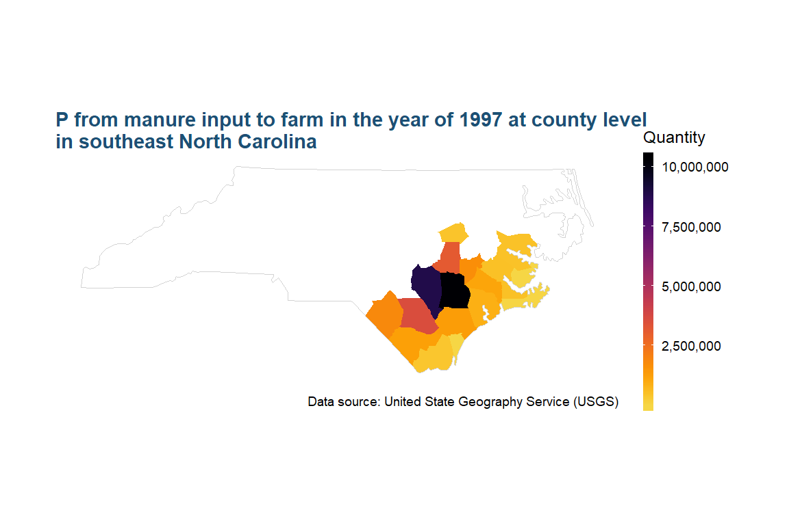

vignettes/State_fertilizer_maps.Rmd
State_fertilizer_maps.RmdYear = 1997
Nutrient = "N"
Farm_Type = "farm"
Input_Type = "manure"
level = "county"
carolinas = c("NC", "SC")
# draw the maps
state_plot <- map_us_fertilizer(data = us_fertilizer_county, Year = Year, Nutrient = Nutrient,
Farm_Type = Farm_Type, Input_Type = Input_Type, State = carolinas,
viridis_palette = "inferno", level = level) +
ggtitle(paste(Nutrient, " from ", Input_Type, " input to ", Farm_Type, " in the year of ",Year,
" at ", level, " level",sep = ""))
state_plot
We can also add a north label and a scale bar for the map from R package ggsn.
Year = 1997
Nutrient = "N"
Farm_Type = "farm"
Input_Type = "manure"
level = "county"
carolinas = c("NC", "SC")
# draw the maps
state_plot <- map_us_fertilizer(data = us_fertilizer_county, Year = Year, Nutrient = Nutrient,
Farm_Type = Farm_Type, Input_Type = Input_Type, State = carolinas,
viridis_palette = "inferno", level = level, north = TRUE) +
ggtitle(paste(Nutrient, " from ", Input_Type, " input to ", Farm_Type, " in the year of ",Year,
" at ", level, " level",sep = ""))
state_plot +
north(data = state_plot$states_shape, location = "topleft")+
scalebar(data = state_plot$states_shape,
dist = 80, dd2km = TRUE, model = 'WGS84', st.size = 3)
Year = c(1950, 1970, 1990, 2010)
Nutrient = "N"
Farm_Type = "farm"
Input_Type = "fertilizer"
level = "state"
facet = "Year"
midwest_states = c("OH", "MI", "IN", "WI", "IL", "MN", "IA", "MI", "ND", "SD", "NE", "KS")
us_fertilizer_county$Year = as.numeric(us_fertilizer_county$Year)
#> Warning: NAs introduced by coercion
# draw the maps
state_plot <- map_us_fertilizer(data = us_fertilizer_county, Year = Year, Nutrient = Nutrient,
Farm_Type = Farm_Type, Input_Type = Input_Type, State = midwest_states,
viridis_palette = "inferno", level = level ) +
ggtitle(paste(Nutrient, " from ", Input_Type, " input to ", Farm_Type,
" at ", level, " level",sep = ""))
state_plot
Year = 1997
Nutrient = "P"
Farm_Type = "farm"
Input_Type = "manure"
level = "county"
carolinas = "NC"
county = c( "duplin", "beaufort", "Lenoir", "pender", "Bladen", "Brunswick",
"Carteret", "Columbus", "jones", "New Hanover", "Onslow", "Pamlico", "Pender",
"Robeson", "Sampson", "Wayne", "Wilson", "Craven")
# draw the maps
state_plot <- map_us_fertilizer(data = us_fertilizer_county, Year = Year, Nutrient = Nutrient,
Farm_Type = Farm_Type, Input_Type = Input_Type, State = carolinas,
County = county, viridis_palette = "inferno", level = level)+
# add title
ggtitle(paste(Nutrient, " from ", Input_Type, " input to ", Farm_Type, " in the year of ",Year,
" at ", level, " level\nin southeast North Carolina",sep = ""))
state_plot 